Attendance, fees, examinations, homework and parent communication — connected in one secure system. Your staff spend less time on paperwork, parents stay informed automatically, and you see exactly how your school is performing, every day.
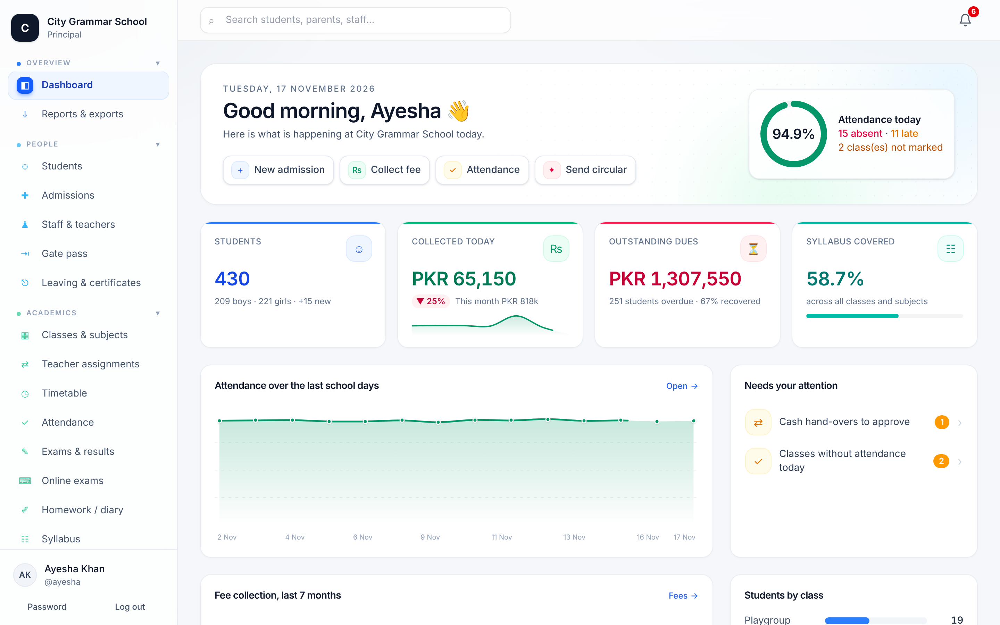
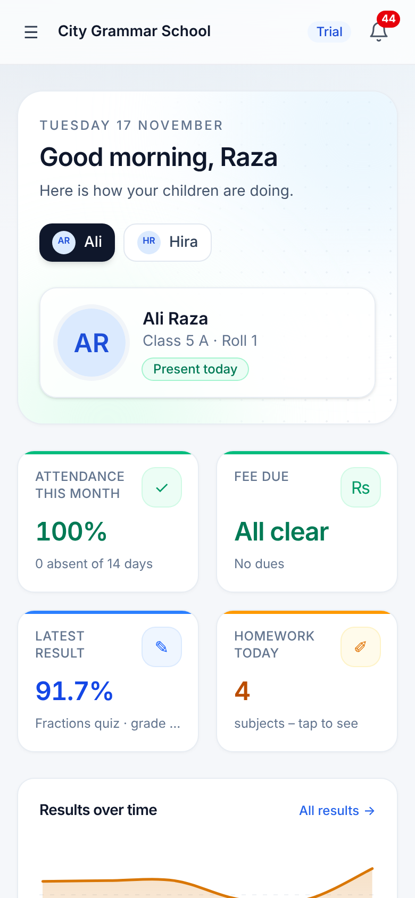
Every day, hours of valuable staff time go into tasks a computer can do in seconds — writing attendance registers, preparing fee vouchers, chasing defaulters, typing report cards and answering the same parent questions again and again. School Management System brings all of this into one place, so your team can focus on what matters most: teaching and caring for children.
Each person gets their own secure login and sees only what they need.
Open the dashboard and see today’s attendance, fee collection, pending approvals and the students who are doing best — without asking anyone for a report.
Students, attendance, fees collected today, outstanding dues and syllabus coverage — updated as staff work.
Cash hand-overs, marks sheets and online papers waiting for approval, open complaints and classes without attendance.
Results are published and cash is accepted only after your approval. Nothing reaches parents without your consent.
Edits to marks, fees and attendance are logged with who, when and why — complete transparency and accountability.
Give the accountant fees, the clerk admissions, and teachers only their own classes. You stay in control of everything.
Student lists, attendance registers, fee collection, defaulters and result sheets — downloaded as Excel, ready to print.
Fee recovery is the lifeline of every private school. The system prepares vouchers, records every payment, shows who still owes and reminds them for you — so recovery improves without uncomfortable phone calls.
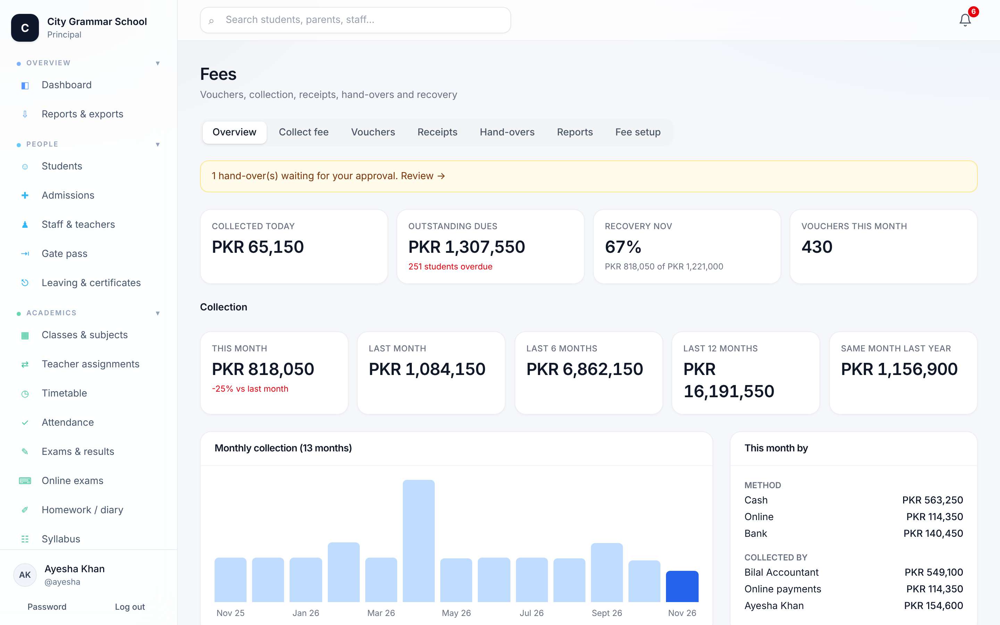
Generated for every student with tuition and other heads, sibling and scholarship discounts, due dates and late-fee rules.
Brothers and sisters are linked as one family; one combined payment clears their vouchers in order. Advances are kept as credit.
Staff collect cash, bank or cheque and print a numbered receipt instantly; parents get a WhatsApp confirmation.
Each collector hands over their day’s cash to you in the system; you approve it — no missing amounts, no disputes.
See who has not paid, for how many months and how much — and send polite WhatsApp reminders to all of them in one click.
This month vs last month, last 6 and 12 months and the same month last year, by class and by collector. Parents can also pay online.
The class teacher marks attendance on a phone or computer. Parents of absent or late children receive a WhatsApp message straight away — a strong signal to families that your school cares about every child, every day.
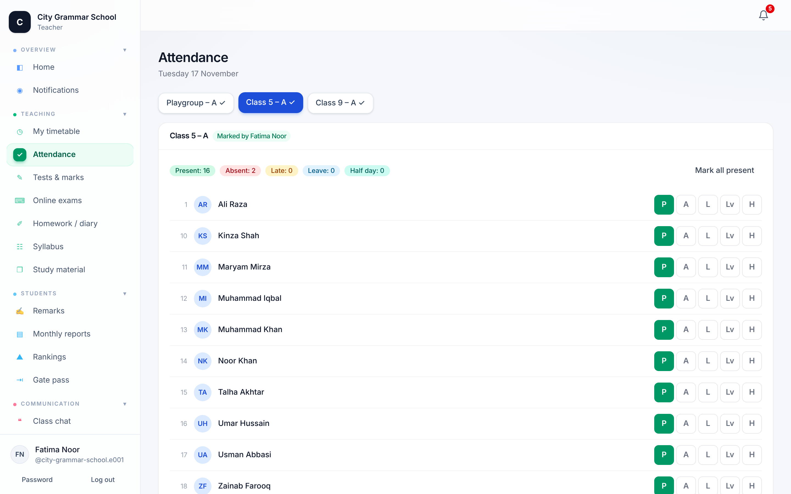
Everyone starts as present; tap only the absent, late or on-leave students. Works on any phone.
Parents are told on WhatsApp the moment attendance is saved — no calls from the office needed.
Monthly registers, class-wise percentages and a low-attendance list are always ready to print or download.
Record who picked the child up and why; parents are notified at once and a printed slip is ready for the gate.
Class and teacher timetables with clash checks. Teachers see their day; students and parents see the class schedule.
The dashboard shows today’s attendance for the whole school and which classes have not been marked yet.
Messages go from your school’s own WhatsApp number, in a clear and respectful format. You choose which alerts are switched on — absence, late arrival, fee receipt, homework, results and circulars.
Sample messages for illustration.
Teachers enter marks once. The system calculates totals, percentages, grades and positions, prepares printable report cards and, after your approval, shares results with parents.
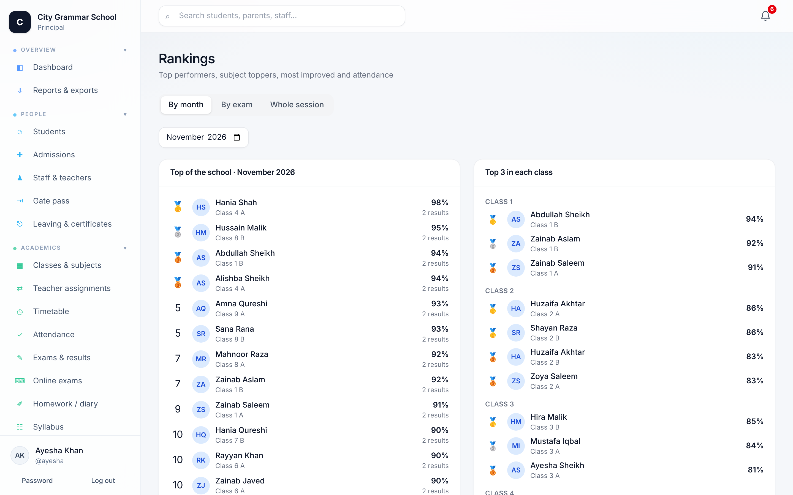
Teachers can also create their own test names, such as “Quiz” or “Unit test”.
Enter marks section by section with absent marking and remarks; the principal approves or returns with a note.
Exam papers with date, time and total marks, shared with students and parents in advance.
Your own grade bands and pass marks; class and section positions; ties handled fairly.
Professional A4 report cards with photo, marks, grades, position, attendance and remarks.
MCQ, true/false, fill-in-the-blanks, matching, short and long questions; timer and auto-save; objective answers marked automatically.
Top students by class and school, most improved, 100% attendance, Student of the Month and a public honor board.
Homework, syllabus progress, study material and communication with students are all in one place — so teachers spend less time on registers and more time in the classroom.
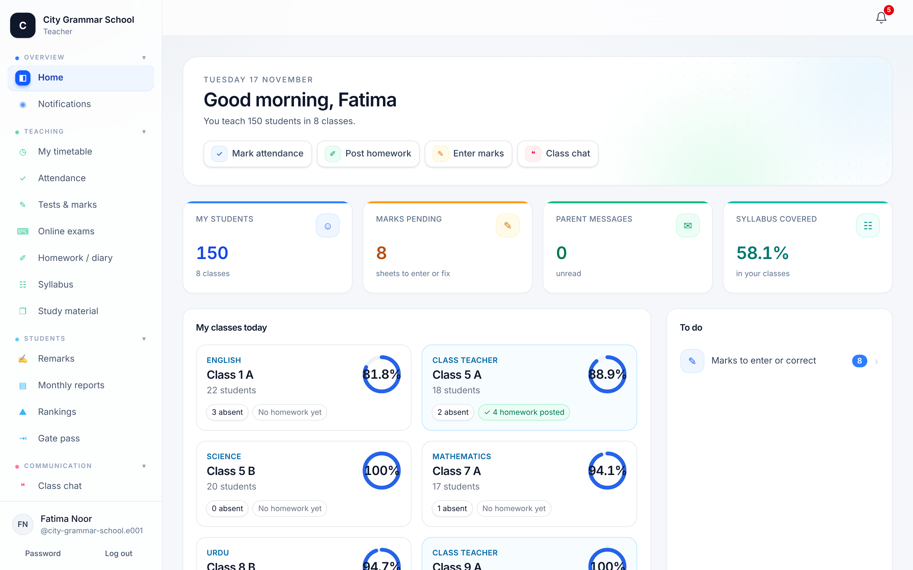
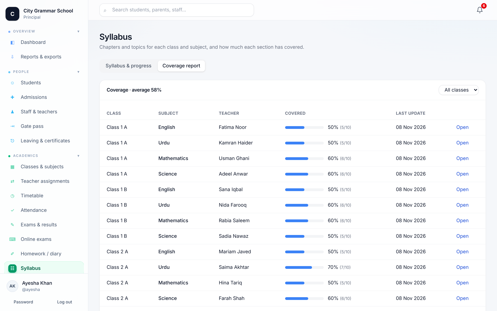
Chapters and topics for every class and subject. Teachers tick what is taught; you see the % covered by every section.
Homework for every subject with attachments, sent to parents as one neat daily message.
Notes, worksheets, books and video links shared with the right class — students can view and download anytime.
Appreciation, behaviour or academic remarks for one student or the whole class — shared with parents or kept private.
A group for each class with its teachers. Teachers moderate; messages clear automatically after 30 days.
Attendance, tests, fee status, remarks and honors for every child — prepared automatically each month.
Parents see everything about their child on their phone — and receive important updates on WhatsApp. Involved parents mean better results, fewer complaints and stronger trust in your school.
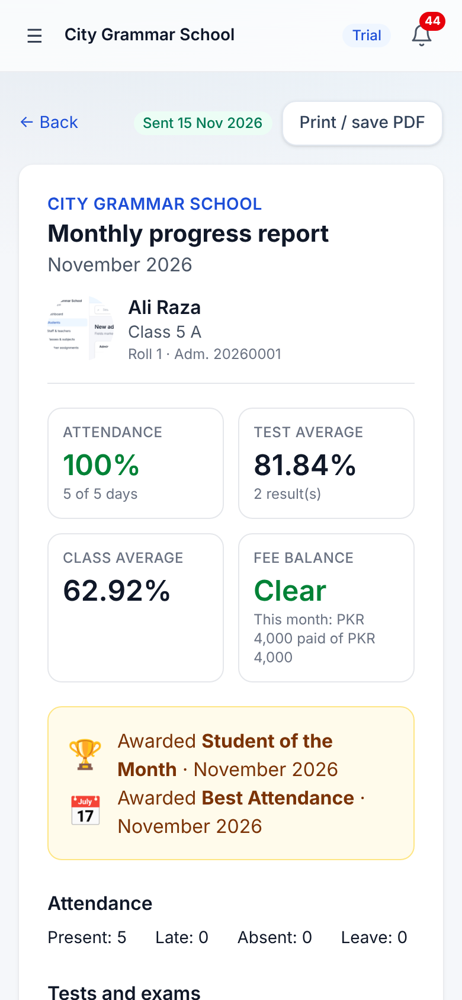
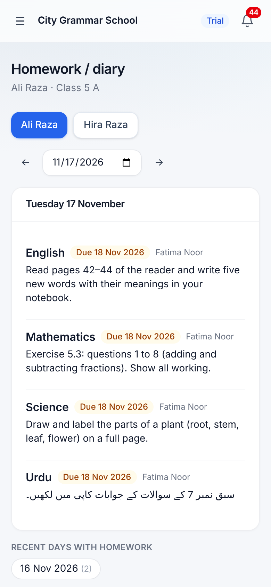
Everything a family experiences with your school — admission, everyday communication and finally the School Leaving Certificate — is organised, recorded and professional.
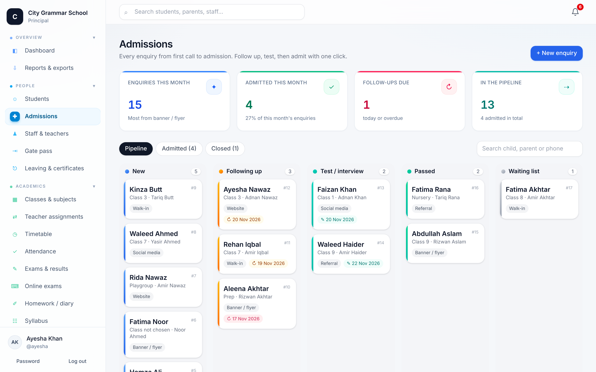
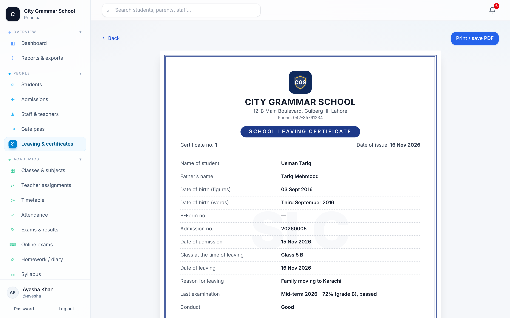
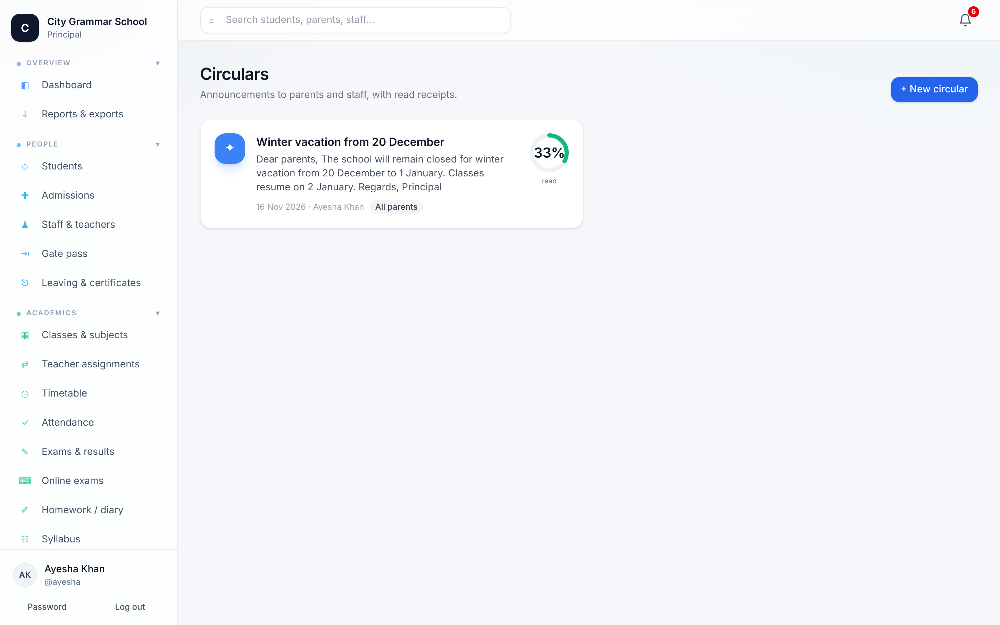
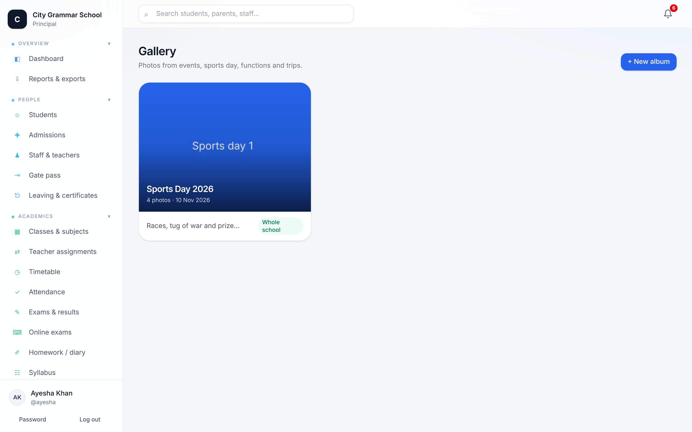
Record every enquiry, follow up on time, hold admission tests and admit in one click — no enquiry is forgotten.
Full admission form with photo, guardians, health and documents; sibling families linked automatically.
Send notices to all parents, chosen classes or staff — and see exactly who has read them.
Every complaint gets a ticket number and status; parents are updated at each step. Nothing is lost.
Photos of events and sports days, and students’ achievements, shared with your school community.
Fee clearance and certificate in minutes; at year end, promote every class to the next in one guided step.
An example for a school of around 400 students and 16 sections. Every school is different — use these figures as a guide to the kind of time your team can save.
| Task | The usual way | With the system |
|---|---|---|
| Daily attendance & absence calls | Registers, totals and phone calls to parents — about 1 hour a day for the office | About 1 minute per class; alerts sent automatically |
| Monthly fee vouchers | Written or typed for every student — 1 to 2 days each month | Generated for the whole school in seconds |
| Defaulter follow-up | Lists made by hand, then individual calls | Ranked list and WhatsApp reminders in one click |
| Report cards | Totals, grades and positions calculated and typed — several days per term | Calculated automatically; print the whole class at once |
| Notices to parents | Photocopies sent home; no way to know who read them | Delivered to every parent’s phone, with read receipts |
| Monthly progress reports | Rarely possible — too much work | Prepared automatically for every child, every month |
| Answering parent queries | Frequent calls and visits to the office | Parents find answers in the app; teachers reply in one place |
Ten hours a week adds up to about a full working week of one office person every month. That time can go to admissions, parent meetings and classroom support — instead of registers and vouchers. Add even a small improvement in fee recovery, and the system can pay for itself.
* Illustrative estimate based on the example above. Actual savings depend on your school’s size and current processes. Better fee recovery comes from clear defaulter lists and timely reminders; results vary by school.
Each school’s records are kept separate; no other school can see them.
Everyone has their own password; staff see only what you allow; teachers see only their classes.
Important changes are recorded with name, date and reason.
Hosted on professional cloud servers — nothing to install or maintain at your school.
Messages go from your school’s WhatsApp Business number. You choose which messages are sent, and can switch any off.
Plans are monthly, based on your school’s size and the features you need. There is no large upfront cost and nothing to install. Ask us for a quotation for your school.
Any smartphone, tablet, laptop or desktop with a web browser.
Normal Wi-Fi or mobile data is enough.
Optional — for automatic messages to parents.
Yes. Each school’s data is kept private and separate, every user has their own password and permissions, and important changes are recorded.
No. It works in the web browser of any smartphone, tablet or computer you already have.
Pages are light and fast on mobile data. Online exams save answers automatically, even through short connection drops.
Yes. Students and staff can be imported from Excel, so you do not need to type everything again.
No. Most updates simply arrive on WhatsApp. The parent app is simple, and logins are printed on the admission slip.
Messages are sent from your school’s own WhatsApp Business number and billed by Meta to your school. You decide which messages are sent.
It is designed to be simple, and we still train your teachers so they feel confident from the first day.
A monthly plan based on your school’s size. Ask us for a quotation — and start with a 30-day free trial.